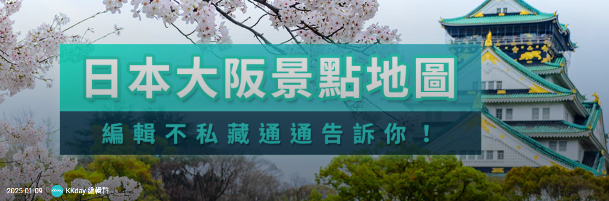

大阪城周邊三十景點統整
| 行程說明 | 交通方式 | 行程說明 | 交通方式 | 行程說明 | 交通方式 | 行程說明 | 交通方式 | 行程說明 | 行程說明 | 行程說明 | 備註 |
|---|---|---|---|---|---|---|---|---|---|---|---|
| Day1 | Day1 | Day2 | Day2 | Day3 | Day3 | Day4 | Day4 | Day5 | Day6 | Day7 | Day5後備選擇 |
| 桃園機場第一航廈 | 飛機起飛 | 動物園前站 | 御堂筋線(紅色)地鐵 | 通天閣 | 堺筋線棕色地鐵 | 動物園前站 | 堺筋線棕色地鐵 | 清水寺 | 京都水族館 | 起床趕車回機場 | 八坂神社 |
| 關西機場 | 桃園飛往日本 | 大國町站 | 無 | 四天王寺 | 步行 | 日本橋轉車往奈良 | 近鐵奈良線 | 一年坂~三年坂 | 京都寶可夢中心 | 無 | 錦市場 |
| 天王寺站 | 大阪環狀線JR | 難波大阪神社 | 步行 | 天王寺動物園 | 步行 | 奈良公園 | 步行 | 花見小路 | 買伴手禮 | 無 | 無 |
| 大阪城公園 | 無 | 道頓堀(心齋橋) | 步行 | 無 | 無 | 東大寺 | 步行 | 伏見稻荷神社周邊 | 無 | 無 | 無 |
| 天神橋筋商店街 | 扇町(堺筋線棕色地鐵) | 黑門市場(晚餐) | 步行 | 無 | 無 | 回京都放行李 | 奈良JR或者地鐵 | 伏見稻荷吉伊卡哇 | 無 | 無 | 無 |
| 飯店休息 | 無 | 飯店休息 | 無 | 無 | 無 | 敘敘宛燒肉 | 無 | 無 | 無 | 無 | 無 |
日本行 (估計 7 天)
飛機 (從桃園飛往大阪關西機場)
關西機場 -> 通天閣 (南海機場線) (鐵路) (1小時)
住宿
安排在難波周邊 (下地鐵放行李) (關西機場 → 難波(特急Rapi:t&空港急行）))
大阪
從難波往大阪城 (搭乘京都地鐵 Osaka metro 從難波御堂筋線紅線 -> 中央線本町 -> 中央線谷町四丁目站) 步行到大阪城
小型景點
通天閣 | 天王寺動物園 (走路 3 分鐘) (約2~3小時就看完) | 四天王寺(外觀造型獨特) (1 天) 從難波御堂筋線紅線 -> 天王寺站紅線
難波八阪神社、臨空城Outlet、心齋橋(逛街) | 道頓堀(潮流服飾)、黑門市場(海鮮市場)(1天)
從難波御堂筋線紅線 -> 心齋橋站紅線
天神橋筋商店街(藥妝店) (千日線(粉色線)日本橋 -> 堺筋線(棕色線)(K12 扇町))
大阪難波站 -> 近鐵奈良線(火車)-> 終點奈良車站 (車程約 50 分鐘)
奈良公園(奈良神社)
京都住宿規劃：
大阪住 2025_2_17 ~ 2025_2_20
住所：
大阪新今宮 2 號店
網路訂房 可以參考樂天 JANLAN
京都
京都伏見稻荷神社(考量)
京都水族館 (大力推薦)
音羽山 清水寺
八坂神社
花見小路 (日本藝妓)
京都神奇寶貝中心
京都一日遊
京都必去景點